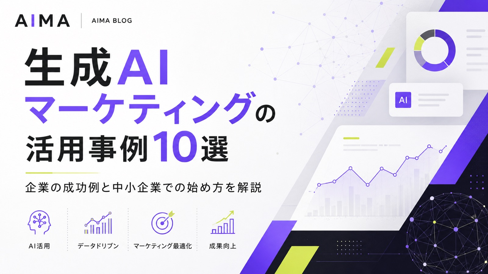
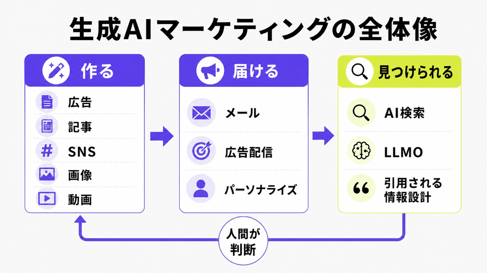
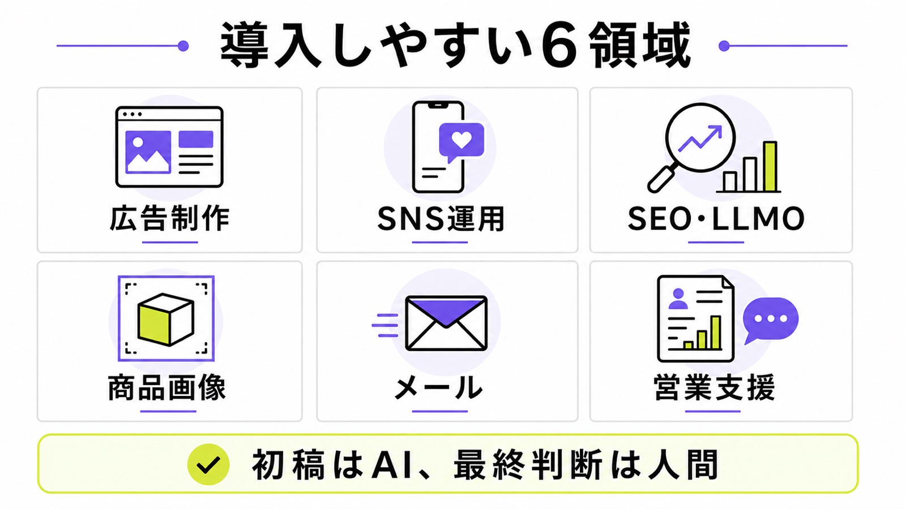
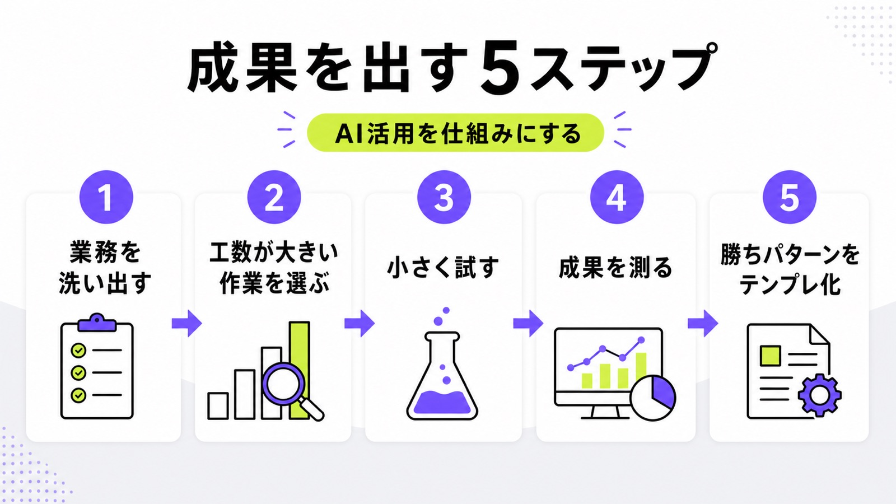

生成AIマーケティングの活用事例10選｜企業の成功例と中小企業での始め方を解説

生成AIをマーケティングに活用する企業が増えています。ChatGPT、Gemini、Claude、画像生成AI、動画生成AIなどにより、文章作成、広告案、SNS投稿、商品画像、営業資料、SEO記事、AI検索対策まで、実務に近い領域で使われるようになりました。
ただし、生成AIを入れれば自動的に成果が出るわけではありません。どの業務にAIを使うのか、どこから人間が判断するのか、何を成果指標として見るのかを決める必要があります。
本記事では、生成AIマーケティングの活用事例を10個紹介します。広告制作や画像生成だけでなく、LLMO対策やAI検索対策、商品ビジュアル制作、パーソナライズ、動画生成など、中小企業でも考え方を応用しやすい事例をまとめます。
目次

生成AIマーケティングとは
生成AIマーケティングとは、ChatGPT、Gemini、Claude、画像生成AI、動画生成AIなどを使い、マーケティング業務の一部を効率化・高度化する取り組みです。
具体的には、広告コピーの作成、SNS投稿の企画、ブログ記事の構成作成、LP改善案の作成、メール文面の作成、バナーや動画のアイデア出し、顧客ごとのメッセージ作成などに活用できます。
従来のマーケティングオートメーションは、あらかじめ設定したルールに沿って配信や管理を自動化するものが中心でした。一方、生成AIは文章、画像、動画、音声、要約、分析コメントなどを新しく作れる点に特徴があります。
たとえば、同じサービスを訴求する場合でも、経営者向け、現場担当者向け、個人事業主向け、BtoB企業向けなど、相手に合わせた切り口を短時間で複数作れます。これまで人間が時間をかけて考えていた「最初のたたき台」を、生成AIによって短時間で用意できるようになりました。
| 活用領域 | 生成AIでできること | 人間が見るべきポイント |
|---|---|---|
| 広告制作 | コピー案、バナー案、動画台本の作成 | ブランド表現、薬機法・景表法などの確認 |
| SNS運用 | 投稿案、リール台本、コメント返信案の作成 | アカウントの世界観、炎上リスク |
| SEO・LLMO | 記事構成、FAQ、比較表、本文初稿の作成 | 一次情報、独自性、事実確認 |
| メールマーケティング | ステップメール、休眠顧客向けメールの作成 | 顧客ごとの温度感、送信タイミング |
| 営業支援 | 営業メール、提案書、議事録要約の作成 | 相手企業の状況、提案内容の妥当性 |
| 商品画像・動画 | 商品ビジュアル、背景差し替え、動画案の作成 | 権利関係、品質、ブランドとの整合性 |
生成AIは、マーケティング担当者の代わりにすべてを判断するものではありません。むしろ、初稿作成や案出しをAIに任せることで、人間は顧客理解、事実確認、ブランド判断、施策全体の設計に時間を使いやすくなります。

生成AIは「作る」だけでなく「見つけられる設計」にも使える
生成AIマーケティングというと、広告文や記事を作るイメージが強いかもしれません。
しかし、今後は「AIでコンテンツを作る」だけでなく、「AIに自社情報を見つけてもらう」「AI回答内で候補として扱われる」ことも重要になります。
Googleは2024年10月、AI Overviewsを100以上の国と地域に拡大し、月間10億人以上のユーザーに届く見込みだと発表しました。検索結果の上部にAIが要約した回答が表示される場面が増え、ユーザーは検索結果の一覧を見る前に、AIの回答で概要を把握するようになっています。
参考：Google｜AI Overviews in Search are coming to more places around the world
この変化によって、企業のマーケティングは「Googleで上位表示されるか」だけでなく、「ChatGPT、Gemini、Perplexity、Google AI Overviewsなどで自社がどう扱われるか」まで見る必要が出てきました。
つまり、生成AIマーケティングは、コンテンツを作るための取り組みであると同時に、AIに理解され、引用され、比較対象として扱われるための情報設計でもあります。
生成AIマーケティングが注目される理由
生成AIマーケティングが注目される理由は、単に「AIが流行っているから」ではありません。マーケティングの現場では、制作物の量、スピード、パーソナライズ、効果測定のすべてが求められるようになっています。
広告を出すだけなら、1つのクリエイティブを作れば済む時代もありました。しかし現在は、SNS、検索広告、ディスプレイ広告、動画広告、LP、メール、ホワイトペーパー、比較記事など、顧客との接点が増えています。それぞれの媒体に合わせて表現を変える必要があり、少人数のチームほど制作負荷が大きくなります。
生成AIは、この負荷を下げる手段になります。広告コピーの初稿を作る、SNS投稿の切り口を出す、LPの見出し案を複数作る、記事構成を作る、メール文面を相手別に変えるといった作業を短時間で進められるからです。
ただし、生成AIは単なる時短ツールではありません。制作量を増やすだけでなく、どの顧客に、どのタイミングで、どのメッセージを届けるのかまで設計して初めて、マーケティング成果につながります。
顧客との接点が一方通行から対話型に変わっている
マーケティングでは、企業が一方的に情報を届けるだけでは反応を得にくくなっています。ユーザーは、自分の状況に合う情報、自分の疑問に答えてくれる情報、自分に関係があると感じられる提案を求めています。
Salesforceの調査でも、顧客とのコミュニケーションが一方通行から対話型へ移っていることが示されています。
“customers don’t want to be talked at — they want a dialogue”
この流れの中で、生成AIはパーソナライズされたメッセージを作る手段になります。たとえば、同じ資料請求者でも、経営者、現場担当者、マーケティング責任者では知りたいことが違います。生成AIを使えば、相手の状況に合わせたメール文面、広告コピー、LPの訴求案を短時間で作りやすくなります。
一方で、パーソナライズは単に名前や業種を差し替えることではありません。相手がいま何に困っていて、次にどの情報を求めているのかを考えたうえで、メッセージを設計する必要があります。生成AIはその作業を支援できますが、顧客理解そのものを代替するわけではありません。
生成AIマーケティングの活用事例10選
ここからは、生成AIマーケティングの具体的な活用事例を紹介します。
広告制作、画像生成、商品ビジュアル、パーソナライズ、AI検索対策など、生成AIの使われ方は企業によって異なります。まずは全体像を確認しておきましょう。
| 事例 | 企業・ブランド | 活用領域 | ポイント |
|---|---|---|---|
| 1 | AIMA | AI検索対策 | ChatGPT・Geminiに自社名を表示させる情報設計 |
| 2 | 伊藤園 | AIタレント・パッケージ | 広告表現と商品デザインに生成AIを活用 |
| 3 | パルコ | 生成AI広告 | モデル撮影なしで広告ビジュアルを制作 |
| 4 | Klarna | 画像制作・キャンペーン | マーケティングコストと制作期間を削減 |
| 5 | Mondelez | 広告・SNS素材 | 生成AIで制作コストを30〜50%削減 |
| 6 | Coca-Cola | 共創型キャンペーン | ユーザー参加型のAIアート施策を展開 |
| 7 | Nestlé | 商品ビジュアル | デジタルツインでEC向け素材を効率化 |
| 8 | Unilever | 商品撮影 | AIとデジタルツインで商品画像制作を高速化 |
| 9 | IBM | パーソナライズ広告 | Adobe Fireflyで大量の広告バリエーションを生成 |
| 10 | Toys“R”Us | 動画生成 | Soraを使ったブランドムービー制作 |
このように見ると、生成AIの活用は「文章を書く」だけにとどまりません。広告、画像、動画、商品データ、AI検索、顧客接点の設計まで、マーケティング業務の広い範囲に入り始めています。
事例1. AIMA｜AI検索対策でChatGPT・Geminiに自社名を表示
株式会社AIMAは、AI検索対策・LLMO対策の自社事例として、サイト公開後7日で「格安LLMO会社といえば？」という質問に対し、ChatGPTとGeminiの両方で株式会社AIMAが先頭表示される状態を確認しています。確認日は2026年4月4日です。
参考：株式会社AIMA｜無料LLMO診断｜AIに引用されているかチェック
この事例は、生成AIマーケティングが「AIで広告や記事を作ること」だけではないことを示しています。ユーザーがChatGPTやGeminiに「おすすめの会社」「比較」「費用相場」「選び方」を質問するようになれば、AI回答内に自社名が出るかどうかもマーケティング上の重要な接点になります。
従来のSEOでは、Google検索で上位表示されることが重要でした。しかしAI検索の文脈では、検索順位だけでなく、AIが回答を作るときに自社の情報を参照できる状態になっているかが重要です。会社名、サービス内容、料金、対応範囲、FAQ、実績、比較記事などがサイト内で明確にまとまっていなければ、AIも自社を候補として扱いにくくなります。
中小企業にとっても、この考え方は現実的です。大規模な広告予算がなくても、AIが回答しやすい質問を設計し、その質問に対応する情報をサイト内に用意すれば、AI検索上の接点を作れる可能性があります。
事例2. 伊藤園｜AIタレントと生成AIパッケージを広告に活用
伊藤園は「お～いお茶 カテキン緑茶」のテレビCMでAIタレントを起用し、さらに生成AIによるパッケージデザインを商品リニューアルに取り入れています。
同社は、AI生成によるAIタレントを使い、約30年後の未来の自分と現在の姿を表現しました。また、生成AIを活用したパッケージデザインも採用しています。
参考：伊藤園｜AIタレントを起用した「お～いお茶 カテキン緑茶」のTV-CM第二弾
この事例で注目すべき点は、生成AIを単なる制作効率化ではなく、ブランド表現の一部として使っていることです。AIタレントの起用は話題性がありますが、それだけでなく「未来の自分」という商品メッセージと結びつけている点に意味があります。
生成AIは、使い方を間違えると「AIを使ったこと」だけが前に出てしまいます。しかしマーケティングで重要なのは、AIを使ったかどうかではなく、その表現が商品価値やブランドメッセージとつながっているかです。
伊藤園の事例は、AIの新しさを活かしながらも、商品の伝えたい価値と広告表現を結びつけた事例といえます。
事例3. パルコ｜モデル撮影なしで生成AI広告を制作
パルコは「HAPPY HOLIDAYSキャンペーン」で、生成AIを活用したファッション広告を制作しました。
この広告では、実際のモデル撮影を行わず、人物から背景までプロンプトをもとに生成しています。さらに、グラフィック、ムービー、ナレーション、音楽まで生成AIで制作しています。
参考：PR TIMES｜パルコの生成AI広告 HAPPY HOLIDAYSキャンペーン
この事例は、画像生成AIや動画生成AIが、広告制作の工程そのものを変える可能性を示しています。従来であれば、モデル、カメラマン、スタジオ、衣装、ヘアメイク、撮影、レタッチなど、多くの工程が必要でした。生成AIを活用すれば、実写撮影とは異なるアプローチで、短期間に広告表現を作れるようになります。
もちろん、すべての広告を生成AIで作ればよいわけではありません。特にファッションやライフスタイル領域では、世界観の作り込みやブランドの質感が重要です。AIで作った画像が不自然に見えたり、ブランドのトーンと合わなかったりすれば、逆に違和感につながります。
それでも、パルコの事例は、生成AIを使うことで、従来の撮影では実現しにくい表現やスピード感を作れることを示しています。
事例4. Klarna｜生成AIでマーケティングコストを年間約1,000万ドル削減
決済サービスを展開するKlarnaは、生成AIをマーケティング業務に活用し、年間約1,000万ドルのコスト削減につなげています。
KlarnaはMidjourney、DALL-E、Fireflyなどを活用し、画像制作、キャンペーン素材、外部サプライヤーへの依存削減などを進めました。Reutersによると、画像制作コストは年間約600万ドル削減され、画像制作サイクルも6週間から7日に短縮されています。
参考：Reuters｜Klarna using GenAI to cut marketing costs by $10 mln annually
この事例で重要なのは、生成AIが「制作費を下げる」だけでなく、「施策の回転数を上げる」ために使われている点です。
マーケティングでは、1つの完璧なクリエイティブを長期間かけて作るより、複数のパターンを素早く出し、反応を見ながら改善するほうが成果につながる場面があります。季節キャンペーン、セール、イベント、ターゲット別の広告など、短期間で多くの素材が必要になる場合は特にそうです。
生成AIは、このような高速な制作・改善サイクルと相性があります。人間が方向性を決め、AIが素材案を大量に作り、人間が選別・修正して配信する。この流れを作れれば、マーケティングのスピードは大きく変わります。
事例5. Mondelez｜生成AIで広告制作コストを30〜50%削減
OreoやMilkaなどを展開するMondelezは、生成AIツールを使ってマーケティングコンテンツの制作コストを30〜50%削減する取り組みを進めています。
Reutersによると、MondelezはAccentureと連携して生成AIツールを開発し、SNS向けのデジタルコンテンツやEC向けの商品ページなどに活用しています。将来的には短尺テレビ広告への活用も視野に入れています。
参考：Reuters｜Oreo-maker Mondelez to use new generative AI tool to slash marketing costs
この事例から見えるのは、生成AIが広告代理店や制作会社をただ置き換えるものではなく、制作プロセスの一部を大きく変える存在になっていることです。
特に、SNS投稿、EC用画像、キャンペーン素材、地域別の広告素材など、量とスピードが求められる領域では、生成AIの効果が出やすくなります。ひとつの商品に対して、複数の国、複数の媒体、複数のターゲット向けに素材を作る場合、人間だけで対応すると制作負荷が大きくなります。
一方で、量産するほどブランド毀損や不適切表現のリスクも増えます。生成AIで作る量を増やすなら、ブランドガイドライン、禁止表現、人間のレビュー体制までセットで設計する必要があります。
事例6. Coca-Cola｜生成AIを使った共創型キャンペーンを実施
Coca-Colaは、OpenAIとBain & Companyと連携し、「Create Real Magic」という生成AIプラットフォームを公開しました。
この取り組みでは、世界中のデジタルクリエイターがCoca-Colaのブランド資産を使い、GPT-4とDALL-Eを組み合わせてオリジナルアートを生成できる仕組みを提供しました。
この事例は、生成AIを社内の制作効率化だけでなく、ユーザー参加型のキャンペーンに活用した点が特徴です。
ブランド側が一方的に広告を作るのではなく、ユーザーやクリエイターが生成AIを使ってブランド表現に参加できる仕組みを作っています。これは、生成AIを「制作ツール」としてだけでなく、「ブランド体験を広げる仕組み」として活用した事例です。
中小企業が同じ規模でキャンペーンを実施するのは難しいかもしれません。しかし、考え方は応用できます。たとえば、顧客に投稿してもらう企画、AIで診断結果を出すコンテンツ、ユーザーが自分ごと化できる画像生成企画などは、規模を小さくしても実施できます。
事例7. Nestlé｜デジタルツインで商品ビジュアル制作を効率化
Nestléは、AIを活用したデジタルツイン技術により、ECやデジタルメディア向けの商品ビジュアル制作を効率化しています。
同社はNVIDIA OmniverseとOpenUSDを活用し、商品の3Dレプリカを作成することで、複数フォーマットのコンテンツ制作やパーソナライズされたビジュアル展開を進めています。
参考：Nestlé｜Nestlé creates AI-powered ‘digital twins’ for brands
この事例は、生成AIマーケティングが広告コピーや記事制作だけに限らないことを示しています。
ECでは、商品画像、バナー、SNS投稿、広告素材、販売ページ用ビジュアルなど、同じ商品でも多くの画像が必要になります。さらに、キャンペーン、季節、販売チャネル、国や地域によって、求められる画像の形式や見せ方も変わります。
デジタルツインを活用すれば、毎回ゼロから撮影するのではなく、商品をデジタル上で再現し、用途に合わせてビジュアルを展開しやすくなります。商品数が多いメーカーやEC事業者にとって、ビジュアル制作の効率化は大きなテーマです。
事例8. Unilever｜AIとデジタルツインで商品撮影を効率化
Unileverも、AIとデジタルツインを使い、商品ビジュアル制作の効率化に取り組んでいます。
同社は、商品を高精度に再現したデジタルツインを活用し、マーケティングチームが高品質な商品画像をより速く、低コストで作れる体制を整えています。Unileverは、商品画像の制作を2倍速くし、制作コストを50%削減できると発表しています。
参考：Unilever｜Unilever reinvents product shoots with digital twins and AI
この事例は、メーカーやD2Cブランドにとって参考になります。
商品画像の制作では、撮影、スタジオ手配、レタッチ、サイズ展開、媒体別の調整など、多くの工程が発生します。特に商品点数が多い企業や、グローバル展開している企業では、同じ商品の素材を何度も作り直す負担が大きくなります。
AIやデジタルツインを使えば、同じ商品から複数パターンのビジュアルを作りやすくなります。EC、SNS広告、店頭販促、キャンペーンページなど、媒体ごとに素材を変える必要がある企業では、生成AIによる制作効率化の効果が出やすくなります。
事例9. IBM｜Adobe Fireflyでパーソナライズ広告を大量生成
IBMは、Adobe Fireflyを活用し、パーソナライズされたマーケティング素材の制作に生成AIを取り入れています。
IBMはAdobe Fireflyを使い、キャンペーン用に200のアセットと1,000以上のマーケティングバリエーションを生成しました。Adobeによると、同社はこれらのツールによって市場投入までの時間を60%改善しています。
参考：Adobe｜IBM Reimagines Content Creation and Digital Marketing with Adobe Firefly Generative AI
この事例は、BtoB企業にとっても参考になります。
BtoBマーケティングでは、業種、役職、企業規模、課題、検討段階によって刺さるメッセージが変わります。たとえば、同じサービスでも、経営層には事業インパクト、現場担当者には業務負担の軽減、マーケティング責任者にはリード獲得やCVR改善を伝える必要があります。
生成AIを使えば、同じキャンペーンでもターゲット別にクリエイティブや文面を出し分けやすくなります。ただし、パーソナライズを増やすほど、ブランド表現やメッセージの一貫性が崩れるリスクもあります。生成AIを活用する場合は、ブランドガイドラインや承認フローもあわせて整える必要があります。
事例10. Toys“R”Us｜Soraを使ったブランドムービーを制作
Toys“R”Usは、OpenAIの動画生成AI「Sora」を使ったブランドフィルムを制作しました。
Toys“R”Us Studiosは、クリエイティブエージェンシーNative Foreignと連携し、ブランドの原点を描く映像をSoraで制作しています。この映像は2024年のCannes Lions Festivalでも披露されました。
参考：PR Newswire｜Toys“R”Us Studios and Native Foreign Use OpenAI’s Sora
この事例は、動画生成AIがブランドストーリーの表現にも使われ始めていることを示しています。
動画制作は、企画、撮影、編集、CG、音楽、ナレーションなど多くの工程が必要です。動画生成AIを使えば、従来より短い期間で映像のたたき台を作れる可能性があります。
一方で、ブランドムービーや広告動画は、映像の質だけでなく、感情表現やブランドの信頼感も重要です。生成AIで作った映像は話題性がありますが、見る人に違和感を与える場合もあります。動画生成AIを使う場合は、話題性だけでなく、ブランドイメージとの相性を慎重に見る必要があります。
生成AIマーケティングで活用しやすい領域
生成AIマーケティングは、さまざまな領域で活用できます。重要なのは、いきなりすべての業務をAI化しようとしないことです。
まずは、制作負荷が大きく、かつ人間が最終確認しやすい領域から始めると失敗しにくくなります。
| 領域 | 活用例 | 向いている企業 |
|---|---|---|
| 広告制作 | コピー案、バナー案、動画台本の作成 | 広告のABテストを増やしたい企業 |
| SNS運用 | 投稿ネタ、リール台本、カルーセル構成の作成 | 投稿頻度を増やしたい企業 |
| SEO・LLMO | 記事構成、FAQ、比較表、本文初稿の作成 | 検索流入やAI検索での露出を増やしたい企業 |
| 商品画像 | 背景差し替え、媒体別画像、キャンペーン素材の作成 | EC、D2C、メーカー |
| メール | ステップメール、休眠顧客向けメールの作成 | 顧客リストを活用したい企業 |
| 営業支援 | 営業メール、提案書、議事録要約の作成 | 少人数で営業活動を行う企業 |
このように見ると、生成AIを使いやすい領域には共通点があります。どれも「ゼロから考えると時間がかかる」「複数パターンが必要になる」「人間が最後に確認すれば品質を担保しやすい」業務です。
一方で、法的判断、医療・金融などの専門的助言、最終的なブランド判断、顧客対応の重要な意思決定などは、生成AIに任せきるべきではありません。AIに任せる作業と、人間が責任を持つ作業を分けることが重要です。

メールマーケティング
メールマーケティングでは、ステップメール、休眠顧客向けメール、資料請求後のフォローメール、セミナー案内、キャンペーン案内などに生成AIを使えます。
特に効果が出やすいのは、顧客の状態ごとに文面を変える場面です。資料請求直後の人、比較検討中の人、過去に問い合わせたものの失注した人、既存顧客では、送るべきメッセージが異なります。
一斉配信の文面をAIで作るだけでは不十分です。相手の状況に合わせて、次にどの行動を取ってもらうのかを決め、その行動につながる文面を設計する必要があります。
たとえば、資料請求直後なら「導入前によくある不安」を解消するメールが有効です。比較検討中なら「他社との違い」や「費用の考え方」を伝える必要があります。休眠顧客なら、いきなり売り込むより、状況確認や新しい事例の共有から入るほうが自然です。
生成AIは、このような顧客状態ごとの文面作成を効率化できます。ただし、顧客理解や配信設計までAIに丸投げするのではなく、どの顧客に何を伝えるのかを人間が決めたうえで使うことが重要です。
生成AIマーケティングで成果を出すポイント
生成AIマーケティングで成果を出すには、ただツールを導入するだけでは不十分です。
ChatGPTを使って記事を書いた、画像生成AIでバナーを作った、SNS投稿案を出した。それだけでは、業務は少し楽になるかもしれませんが、売上や問い合わせに直結するとは限りません。
成果につなげるには、業務設計、品質管理、成果指標の3つを最初に決めておく必要があります。
最初から全自動化を狙わない
生成AIを導入すると、すべてを自動化したくなるかもしれません。
しかし、最初から全自動化を狙うと失敗しやすくなります。AIの出力には、誤り、不自然な表現、ブランドに合わない言い回し、事実確認が必要な情報が含まれることがあるからです。
最初は、AIに初稿や案出しを任せ、人間が確認・修正する形が現実的です。たとえば、記事制作なら、AIに構成案や本文のたたき台を作らせたうえで、自社の実績、顧客事例、一次情報、独自の見解を人間が追加します。
広告制作でも同じです。AIに複数のコピー案を出させることはできますが、最終的にどの表現がブランドに合うか、法的に問題がないか、顧客に誤解を与えないかは人間が判断する必要があります。
| 工程 | AIに任せやすい作業 | 人間が判断すべき作業 |
|---|---|---|
| 企画 | 切り口の案出し、競合パターンの洗い出し | どの市場・顧客を狙うかの判断 |
| 制作 | 初稿作成、見出し案、複数パターンの作成 | ブランド表現、事実確認、最終編集 |
| 配信 | 投稿文案、メール文面、広告コピーの展開 | 配信対象、予算配分、優先順位 |
| 分析 | レポート要約、改善案のたたき台 | 施策の継続・停止・投資判断 |
生成AIは作業を速くする道具です。責任までAIに渡すのではなく、人間が判断する前提で使うことで、実務に組み込みやすくなります。
AIに任せる業務を先に決める
生成AIを導入するときは、「とりあえずChatGPTを使う」では成果につながりにくくなります。
まずは、自社のマーケティング業務を洗い出し、どの業務に時間がかかっているかを確認する必要があります。記事構成の作成、SNS投稿のネタ出し、営業メールの作成、提案書の作成、競合調査、FAQ作成、問い合わせ返信、レポート作成など、日々の業務を書き出してみましょう。
そのうえで、工数が大きいものの、AIに任せてもリスクが比較的低い作業から始めるのがおすすめです。
McKinseyも、生成AIで成果を出すには単なるツール導入ではなく、業務フローの見直しが重要だと指摘しています。
“redesigning workflows as they deploy gen AI”
出典：McKinsey｜The state of AI: How organizations are rewiring to capture value
たとえば、記事構成やSNS投稿のネタ出しは、AIが出した案を人間が選べばよいため、導入しやすい領域です。一方、専門性が高い比較記事や料金情報、法的な判断を含むコンテンツは、AIの出力をそのまま使うべきではありません。
最初に業務を分けておくことで、AI活用が属人的な便利技で終わらず、会社の仕組みとして使いやすくなります。
成果指標を決める
生成AIマーケティングでは、成果指標を決めておくことも重要です。見るべき指標は、施策によって変わるからです。
| 施策 | 見るべき指標 | 判断のポイント |
|---|---|---|
| 広告制作 | クリック率、CVR、CPA、制作本数、制作時間 | AIで制作量を増やした結果、獲得効率が改善しているか |
| SEO記事 | 検索順位、表示回数、クリック数、CV数 | 記事公開後に検索流入や問い合わせにつながっているか |
| LLMO・AI検索対策 | AI回答での表示状況、引用URL、指名検索数、問い合わせ数 | ChatGPTやGemini上の露出が実際の行動につながっているか |
| SNS運用 | 再生数、保存数、プロフィールアクセス、フォロー率 | 投稿数だけでなく、次の行動に進んでいるか |
| メールマーケティング | 開封率、クリック率、返信率、商談化率 | 文面変更によって顧客の反応が改善しているか |
| 営業支援 | 送信数、返信率、商談化率、受注率 | AIで作業量を増やした結果、商談や売上に結びついているか |
このように、何を改善したいのかを決めずにAIを使うと、便利ではあるものの売上や問い合わせにはつながりにくくなります。
たとえば、SNS投稿をAIで大量に作れても、プロフィールアクセスや問い合わせが増えていなければ、マーケティング成果としては弱いままです。SEO記事も、公開本数だけが増えて検索流入やCVが伸びなければ、制作体制を見直す必要があります。
生成AIを使う目的は、作業を増やすことではありません。最終的には、問い合わせ、商談、購入、指名検索、ブランド認知など、事業に近い指標へつなげることが重要です。
自社の一次情報を入れる
生成AIで作っただけの文章は、どの会社でも似た内容になりやすいです。
AIは一般的な説明や整った文章を作るのは得意ですが、自社の実績、顧客の声、現場で得た知見、具体的な失敗例、独自の判断基準までは自動で生み出せません。だからこそ、生成AIマーケティングでは自社の一次情報が重要になります。
たとえば、料金、対応範囲、導入事例、顧客からよく聞かれる質問、過去の改善事例、問い合わせにつながった記事、失敗した施策などは、他社にはない情報です。
こうした情報を入れることで、記事やページの信頼性が高まります。AIが作った土台に、自社独自の情報をどれだけ乗せられるかが、生成AIマーケティングの差になります。
AI検索での見え方も確認する
これからのマーケティングでは、Google検索順位だけでなく、AI検索での見え方も確認する必要があります。
ユーザーはすでに、ChatGPTやGeminiに「おすすめの会社」「比較」「費用相場」「選び方」を聞くようになっています。関連して、ChatGPTに会社名を出す考え方も整理しておくと、自社サイトに足りない情報を見つけやすくなります。そこで自社名が出るのか、競合が出るのか、自社サイトが引用されるのかによって、見込み客との接点は変わります。
確認すべき質問は、たとえば以下のようなものです。
| 質問例 | 確認したいこと |
|---|---|
| 〇〇業界でおすすめの会社は？ | 自社が候補として出るか |
| 〇〇に強い会社は？ | 自社の強みがAIに認識されているか |
| 〇〇の費用相場は？ | 自社の料金情報が参照されるか |
| 〇〇と△△の違いは？ | 比較文脈で自社が扱われるか |
| 中小企業が〇〇を始めるなら何をすべき？ | 自社サービスにつながる課題が出てくるか |
AI検索上の見え方を確認すると、自社サイトに足りない情報も見えてきます。料金が出ていない、FAQが弱い、比較記事がない、実績が少ない、会社情報が薄いといった問題があると、AIも自社を候補として扱いにくくなります。
生成AI時代のマーケティングでは、検索順位だけでなく、AI回答内での扱われ方も重要な確認項目です。
生成AIマーケティングの注意点
生成AIマーケティングには多くのメリットがありますが、使い方を間違えると逆効果になることもあります。
特に注意すべきなのは、事実確認、権利関係、品質管理、ブランド表現です。生成AIは便利な道具ですが、出力された内容が常に正しいわけではありません。
事実確認なしで公開しない
生成AIは、もっともらしい誤情報を出すことがあります。
特に、法律、医療、金融、補助金、料金、比較記事、企業情報などは注意が必要です。AIが出した内容をそのまま公開すると、誤情報によって信用を失う可能性があります。
Googleも、生成AIで作られたコンテンツそのものを否定しているわけではありません。重要なのは、どのように作ったかではなく、ユーザーにとって有益で信頼できる内容になっているかです。
“Our focus on the quality of content, rather than how content is produced”
出典：Google Search Central｜Google Search's guidance about AI-generated content
つまり、AIを使うこと自体が問題なのではありません。問題になるのは、事実確認をせず、独自性も加えず、ユーザーの判断材料にならないコンテンツを量産することです。
著作権・肖像権・商標に注意する
画像生成AIや動画生成AIを使う場合、既存キャラクター、芸能人、競合ブランド、著作物に似せすぎる表現は避ける必要があります。
広告やSNSで使う場合は、商用利用の可否、権利関係、利用規約も確認しましょう。特に、人物画像やブランドロゴに近い表現は、法的な問題だけでなく、炎上やブランド毀損のリスクにもつながります。
生成AIは、短時間で高品質な画像や動画を作れる一方で、どこまで使ってよいかの判断が難しい領域でもあります。社外に出すクリエイティブほど、確認フローを明確にしておく必要があります。
AIっぽい量産記事だけでは成果が出にくい
生成AIを使えば、記事を大量に作ることはできます。
しかし、AIっぽい一般論だけの記事を増やしても、成果は出にくくなります。特にSEOやLLMOでは、読者の疑問に答えるだけでなく、具体的な事例、比較、数値、FAQ、自社の見解が必要です。
ユーザーは、どこにでもある説明を読みたいわけではありません。自社に依頼すべきか、どのサービスを選ぶべきか、いくらかかるのか、失敗しないために何を見るべきかを知りたいのです。
生成AIを使うなら、一般論を作るだけで終わらせず、自社の経験や実績を入れて、判断材料になる記事に仕上げる必要があります。
ブランドの声を失わない
生成AIは、平均的で整った文章を作るのが得意です。
しかし、平均的な文章だけでは、ブランドの個性が消えてしまいます。どの会社が書いても同じように見える文章では、読者の印象に残りません。
最終的には、自社の立場、主張、顧客理解、言葉遣いを反映させる必要があります。
生成AIは文章を作る道具ですが、ブランドの考え方まで代わりに作ってくれるわけではありません。むしろ、AIが作った文章をどう編集するかによって、会社の姿勢が表れます。
生成AIマーケティングを始める手順
生成AIマーケティングを始めるなら、いきなり大きなシステムを導入する必要はありません。
まずは、日々のマーケティング業務の中で時間がかかっている作業を見つけ、小さく試すことから始めるのが現実的です。

STEP1. 自社のマーケティング業務を洗い出す
まずは、自社で行っているマーケティング業務を洗い出します。
記事制作、SNS運用、広告運用、営業メール、問い合わせ返信、資料作成、LP改善、競合調査など、日々の作業を書き出しましょう。
この時点では、AIでできるかどうかを考えすぎる必要はありません。まずは、どの作業に時間がかかっているのか、どの作業が属人化しているのかを把握することが重要です。
STEP2. 工数が大きい作業を選ぶ
次に、時間がかかっている作業を選びます。
最初は、成果への影響が大きく、かつAIに任せやすい作業から始めるのが現実的です。記事構成、SNSネタ出し、営業メール初稿、FAQ作成、競合比較表の作成などは、比較的始めやすい領域です。
一方、専門的な判断や法的な確認が必要な内容は、AIの出力をそのまま使うのではなく、人間の確認を前提にする必要があります。
STEP3. 小さく試す
いきなり全社導入する必要はありません。
まずは、1記事、1広告、1メール、1LP改善など、小さく試しましょう。小さく試せば、AIが得意な作業と苦手な作業が見えてきます。
たとえば、記事構成は使えるが本文は修正が多い、SNS投稿案は便利だがブランドの言葉に直す必要がある、営業メールは初稿としては使えるが相手企業ごとの調整が必要、といった判断ができます。
STEP4. 成果を測る
AIを使った結果、何が改善したのかを確認します。
制作時間が減ったのか、投稿数が増えたのか、検索順位が上がったのか、問い合わせが増えたのか、AI回答に表示されたのかを見ます。
成果が見えないまま使い続けると、ただの便利ツールで終わってしまいます。生成AIをマーケティングに使うなら、最終的にどの数字を改善したいのかを決めておく必要があります。
STEP5. 勝ちパターンをテンプレ化する
うまくいった使い方は、テンプレ化しましょう。
プロンプト、チェックリスト、構成フォーマット、確認項目、公開前のルールをまとめることで、再現性が高まります。
属人的に使うのではなく、チームや会社の仕組みにすることが重要です。生成AIは、個人が便利に使う段階から、業務フローに組み込む段階に進めて初めて大きな効果が出ます。
生成AIマーケティングならAIMAにご相談ください
生成AIマーケティングは、広告文やSNS投稿を作るだけではありません。
これからは、ChatGPT、Gemini、Perplexity、Google AI Overviewsなどに自社情報がどう扱われるかも重要になります。
株式会社AIMAは、大阪市北区を拠点に、AIに引用される仕組みづくりを支援する会社です。質問設計、記事制作、引用チェックに絞り、AI検索時代に合わせたコンテンツ設計を支援しています。
AIMAでできること
AIMAでは、AI検索での現状チェック、競合の表示状況調査、ChatGPT・Gemini・Perplexityへの質問設計、AIに引用されやすい記事テーマの提案、LLMO向け記事の作成、FAQ・比較記事・サービスページの改善、引用状況のチェックなどに対応しています。
生成AI時代のマーケティングでは、コンテンツを作るだけでなく、AIに理解され、引用され、候補として扱われる状態を作る必要があります。
AIMAは、SEOコンテンツ制作の実務経験を土台に、AI検索時代に合わせた情報設計と記事制作を支援します。
まとめ
生成AIマーケティングは、広告コピーやSNS投稿を作るだけの施策ではありません。
AI検索対策、画像生成AIを使った広告制作、マーケティングコストの削減、SNS素材の量産、商品画像制作、パーソナライズ広告、動画生成、営業支援など、活用範囲は広がっています。
重要なのは、生成AIにすべてを任せることではありません。
AIには初稿作成、要約、パターン出し、構成作成などを任せ、人間は事実確認、独自性の追加、ブランド表現、最終判断に集中する。この役割分担ができる企業ほど、生成AIをマーケティングの成果につなげやすくなります。
また、今後は「AIで作るマーケティング」だけでなく、「AIに見つけられるマーケティング」も重要になります。
Google検索の順位だけでなく、ChatGPT、Gemini、Perplexity、Google AI Overviewsで自社がどう表示されるかを確認し、AIに引用されやすい情報設計を進めることが、生成AI時代のマーケティングでは欠かせません。
生成AIを活用してマーケティング業務を効率化したい企業、AI検索で自社名を表示させたい企業、LLMO対策を小さく始めたい企業は、AIMAにご相談ください。